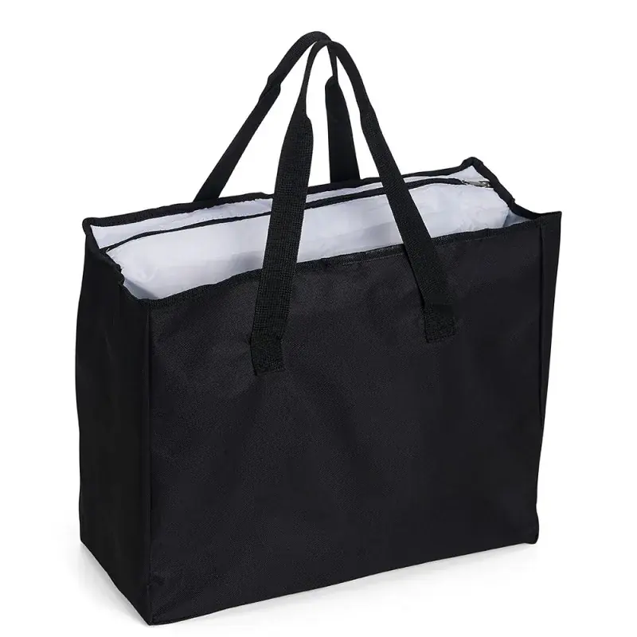

A bolsa térmica personalizada atende públicos diferentes com a mesma estrutura: brinde corporativo, produto de marca própria, bag de delivery e bolsa de marmita para o trabalho. A seguir: como ela funciona, quais camadas definem o desempenho, que tamanho escolher e o que verificar antes de fechar um pedido.
Como uma bolsa térmica funciona
A bolsa térmica não gera frio nem calor. Ela reduz a troca de temperatura entre o conteúdo e o ambiente e, assim, conserva por mais tempo o que entrou frio ou quente. Comida que entra morna não esfria dentro dela.
Para alimentos perecíveis, o isolamento sozinho não basta. O Departamento de Agricultura dos Estados Unidos (USDA) recomenda usar bolsa térmica com pelo menos duas fontes de frio, como gelo reutilizável (gelox) ou uma garrafa de água congelada (USDA). Isso vale como orientação para o usuário final e para quem monta kits de alimentação.
Por que o tempo importa
Segundo o serviço de inspeção de alimentos do USDA, bactérias se multiplicam mais rápido entre 4 °C e 60 °C (40 °F a 140 °F), e alimentos perecíveis não devem ficar fora da refrigeração por mais de duas horas, ou uma hora se a temperatura ambiente passar de 32 °C (FSIS/USDA). A bolsa térmica ajuda a ficar dentro dessa margem durante o transporte. Ela não substitui a geladeira.
As camadas que definem a qualidade
- Tecido externo: normalmente nylon, poliéster ou oxford. Dá resistência ao uso e recebe a personalização da marca.
- Manta isolante: a camada do meio, geralmente espuma de polietileno ou manta aluminizada. É a camada que mais influencia o desempenho térmico; espessura e densidade fazem diferença.
- Forro interno: material liso e impermeável, como PEVA ou laminado aluminizado. Precisa ser fácil de limpar, porque recebe respingos e condensação.
Ao comparar propostas, pergunte qual é a manta e qual é o forro, não só o preço. Duas bolsas iguais por fora podem ter desempenho bem diferente.
Tamanhos: escolha pelo uso
- Compacta (marmita individual): um pote e uma garrafa. É a mais pedida como brinde corporativo, porque atende a maioria das pessoas sem encarecer o lote.
- Média (tote térmica): formato de sacola, para compras pequenas ou refeição para duas pessoas. Boa área para a marca.
- Grande (bag de entrega): delivery, feira e transporte de volume. Pede reforço estrutural e alça mais robusta.
- Cooler de praia: foco em bebidas e uso ao ar livre, com demanda mais sazonal.
Um teste simples: liste o que a bolsa vai carregar sempre e dimensione a partir disso. A peça piloto serve justamente para validar medidas antes do lote.
Para quem ela funciona bem
Brinde corporativo: quem leva almoço para o trabalho usa a bolsa em boa parte dos dias úteis, o que mantém a marca à vista no ambiente profissional.
Marca própria: combina com nichos de alimentação saudável, marmitas congeladas, fitness e lifestyle, em que o item faz parte da rotina do cliente.
Delivery e food service: a bag com a marca do restaurante circula pela cidade e atende uma necessidade operacional de transporte.
Personalização
A face externa costuma ser ampla e sem recortes, o que facilita a aplicação:
- Silk screen: melhor custo em volume para logos de poucas cores.
- Sublimação: estampa colorida em toda a face, somente em tecido claro de poliéster.
- Bordado: maior percepção de valor, indicado para linhas de venda. Bordamos o tecido externo antes da montagem, para não perfurar a manta e o forro.
- Etiqueta tecida e puxador personalizado: detalhes que diferenciam a peça de um modelo genérico.
Veja o comparativo completo em bordado, silk ou sublimação.
O que checar antes de fechar o pedido
- Costura das laterais e da base: é onde o peso se concentra. Costura reforçada evita o rasgo mais comum.
- Zíper: é aberto e fechado várias vezes por dia. Na nossa experiência, é o componente que mais gera reclamação quando é fraco.
- Forro: precisa ser liso, impermeável e com costuras bem acabadas. Forro que absorve líquido retém cheiro e compromete a higiene.
- Vedação da tampa: aba sobreposta ou zíper bem encaixado reduzem a troca de ar com o ambiente.
Limpeza e orientação ao usuário
Uma etiqueta ou cartão com orientações simples aumenta a vida útil da peça: limpar o forro com pano úmido e sabão neutro após o uso, deixar secar aberta e usar gelo reutilizável com alimentos perecíveis. Para kits corporativos, é um detalhe de baixo custo que melhora a experiência de quem recebe.
Quantidade, prazo e próximos passos
Produzimos bolsas térmicas personalizadas a partir de 20 peças por modelo e cor. A peça piloto fica pronta em até 15 dias e a produção leva até 25 dias úteis após a aprovação. O custo por peça cai conforme o volume aumenta, porque a preparação se dilui no lote.
Veja a linha em bolsas térmicas personalizadas ou a de brindes corporativos para montar um kit. Para quem leva marmita e roupa de treino no mesmo dia, a bolsa fitness é um complemento comum.
Perguntas frequentes
Por quanto tempo a bolsa térmica conserva a temperatura?
Depende da manta isolante, do tamanho da bolsa, da temperatura do ambiente e do que entrou nela. A bolsa reduz a troca de calor, mas não gera frio. Para alimentos perecíveis, o USDA recomenda usar pelo menos duas fontes de frio, como gelo reutilizável.
Qual o pedido mínimo de bolsa térmica personalizada?
O pedido mínimo é de 20 peças por modelo e cor, com peça piloto aprovada antes da produção do lote. O custo por peça diminui conforme a quantidade aumenta.
Qual material é usado no forro?
Usamos forro liso e impermeável, como PEVA ou laminado aluminizado, fácil de limpar. Entre o forro e o tecido externo fica a manta isolante, que é a camada que mais influencia o desempenho térmico.
Dá para colocar a marca da minha empresa?
Sim. A face externa recebe silk screen, sublimação (em poliéster claro) ou bordado. Também é possível personalizar etiqueta e puxador do zíper.
Qual tamanho escolher para brinde corporativo?
A compacta, para uma marmita e uma garrafa, é a mais usada em brindes porque atende a maioria das pessoas sem encarecer o lote. Modelos maiores fazem sentido quando o público leva compras ou refeições para mais de uma pessoa.
Fontes
- Use an Insulated Lunch Bag to Keep Meals Safe, U.S. Department of Agriculture (USDA).
- USDA Urges Consumers to Keep Clear of the Danger Zone this Summer, USDA Food Safety and Inspection Service.
Quer produzir bolsas térmicas com a sua marca?
Fabricação B2B a partir de 20 unidades, com peça piloto antes do lote e entrega em até 25 dias úteis. Fale direto com nosso comercial.
Solicitar orçamento